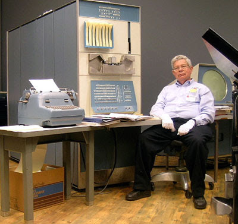
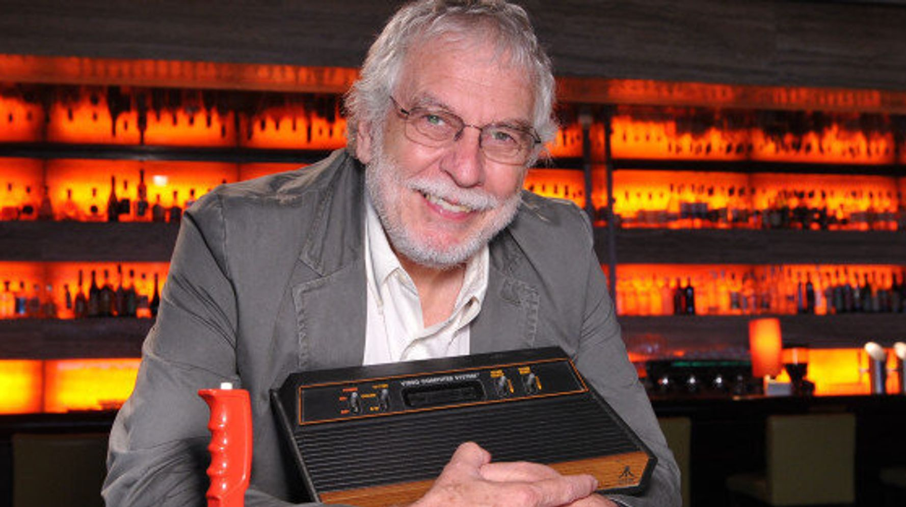

The evolution of microchips and microprocessors, as predicted by Moore's Law, led to increasingly smaller and more powerful devices. This evolution, along with the perception that computers could also be fun, contributed to the computer revolution and the spread of personal computers. Two main cultures, hackers and video game entrepreneurs, drove this idea.
The hackers from the MIT Tech Model Railroad Club, including Steve Russell, created the first video game, Spacewar, on a PDP-1 donated to MIT. This game, developed collaboratively and open source, demonstrated that computers could interact in real-time and have intuitive interfaces. Spacewar and hacker culture significantly contributed to the development of modern personal computers.
Nolan Bushnell, a Spacewar fan in the 1960s, combined his interest in computers with his experience working in amusement parks to develop his career as an entrepreneur. After becoming an orphan at fifteen, he completed his father's unfinished projects, boosting his confidence. While working in an amusement park to finance his studies at the University of Utah, Bushnell studied computer graphics, merging his love for electronic games with an understanding of arcade economics.  Bushnell collaborated with Ted Dabney to create affordable electronic games. After various experiments, he designed Computer Space by transforming Spacewar into a game accessible to the public. Despite competition, his game succeeded, leading him to found Atari in 1972 with his first engineer, Al Alcorn. Alcorn developed PONG, a simple yet engaging game that achieved great success in bars and pubs, despite an initial rejection from Bally Midway.
PONG generated significant revenue, allowing Bushnell to finance production independently. Atari's corporate culture, influenced by the hippy spirit, generate a creative and unconventional work environment, contributing to the company's success. Bushnell settled a legal dispute with Magnavox by paying a lump sum, securing the production rights for PONG. Atari became a pioneer in the video game industry due to Bushnell's innovation, engineering skills, and entrepreneurial acumen.
© 2024 by Mattia Messori, Andrea Lugari and Nassim Mimi. Powered and secured by Visual Studio Code